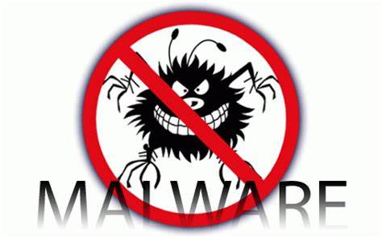

Instalar Software Antivirus y Antimalware: Utiliza un software antivirus y antimalware confiable que ofrezca protección en tiempo real. Mantén el software actualizado para protegerte contra las últimas amenazas.
Mantener el Sistema Operativo y Software Actualizados: Instala regularmente las actualizaciones del sistema operativo y otros programas. Activa las actualizaciones automáticas cuando sea posible.
Configurar Cortafuegos (Firewalls): Usa un cortafuegos para bloquear el acceso no autorizado a tu red. Configura tanto el cortafuegos del hardware (enrutador) como el del software (sistema operativo).
Utilizar Contraseñas Fuertes y Únicas: Crea contraseñas fuertes que incluyan una combinación de letras, números y caracteres especiales. Usa un administrador de contraseñas para generar y almacenar contraseñas seguras.
Practicar la Navegación Segura: Evita hacer clic en enlaces sospechosos o descargar archivos de fuentes desconocidas. Verifica la legitimidad de los sitios web antes de proporcionar información personal.
Hacer Copias de Seguridad Regularmente: Realiza copias de seguridad periódicas de tus datos importantes en un dispositivo externo o en la nube. Asegúrate de que las copias de seguridad estén protegidas contra el acceso no autorizado.
Revisar y Monitorizar la Actividad del Sistema: Revisa regularmente los registros de actividad del sistema para detectar comportamientos sospechosos. Usa herramientas de monitoreo para alertarte sobre posibles amenazas.
Eliminar el Software No Necesario: Desinstala el software que no necesitas para reducir las posibles vulnerabilidades.
